12時間の飛行を終えて日本に帰って来ました。飛行機は9時間を越えたあたりからが勝負だと思い知りました。
ニューヨークに比べたら日本はまだ暖かいなぁと余裕をかましていたのですが、その夜から悪寒が止まらず発熱。
帰省初日から風邪を引きました。
12時間の飛行を終えて日本に帰って来ました。飛行機は9時間を越えたあたりからが勝負だと思い知りました。
ニューヨークに比べたら日本はまだ暖かいなぁと余裕をかましていたのですが、その夜から悪寒が止まらず発熱。
帰省初日から風邪を引きました。
ニューヨークも今日で最終日です。
メトロポリタン美術館は時間的にも無理っぽいので、ソーホー地区やタイムズスクウェアなど、落ち穂拾い的にグルグルと。
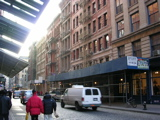 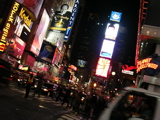それから、歩きすぎて疲れたので、Strand BookStoreに入り浸っていました(結局)。おとといと違って、今日はUnion Square近くの本店(?)に行ったのですが、かなりの数の古本と新刊がお手頃な値段で並んでいるのでいくら居ても飽きません(病気)。
古本の棚を物色していると、見たことのないWilliam Gibsonの本が。
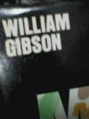 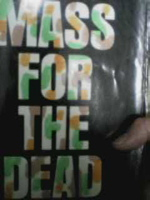こんな本出してたんだ，と思って裏表紙を見てみると…。
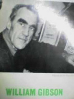…誰だお前！？
まぁそんなわけで、それなりにニューヨークを満喫しましたよ。あと、やはり外は寒いのでやたらとスタバ等に入ってコーヒーを飲みまくりました。ニューヨーカーはカフェ好きというイメージがありましたが、好きというよりはやむを得ず、みたいな感じなのかもしれない、と間違った解釈をしておきました。バイバイNYC。
今日こそ観光らしいことをします。
まずはMOMA(近代美術館)へ向かいます。途中、あちこちで地下から蒸気が吹き上がっており、サイバー感を盛り上げます。
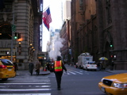MOMAでは、有名どころで、ダリやアンディ・ウォーホールなどを観賞。MOMAにはインダストリアルデザインの展示もあるのがおもしろいところ。Macやヴァレンタインのタイプライターなども展示されています。
続いては、アメリカ自然史博物館へ向かいます。いきなりバロサウルスとアロサウルスの骨格標本が出迎えてくれるのでときめきます。というかこの博物館すげぇ。北米を中心とした動物の標本が展示されているのですが、その背景のジオラマの出来がすごい。なんだろう、標本なのにこの躍動感。写真を撮り忘れましたが、日本の博物館もこうすりゃいいのにと思うことしきりでした。
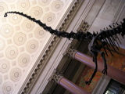 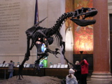その後、エンパイアステートビルディングへ移動。この辺で日が暮れて来たので、夜景を見るにはベストタイミングです。展望台に登る前に紹介ムービーを見るのですが、ヒンデンベルグ号がエンパイアステートビルディングの係留マスト(上空！)に接舷するイメージ映像(計画にはあったが、実現しなかったので)が流れ、一人で大興奮していました。


展望台からの眺めはなんじゃこりゃ！ってくらいの絶景で言葉もありません。メカニカルタウン！(特捜最前線表現)
帰りの地下鉄が事故で途中までしか行かないのに気づかず、危うくホテルへ帰れなくなるところでした。隣のおばさんが親切に教えてくれたので事なきを得ました。あぶねぇ。
ホテルはクイーンズ側にあって、ダウンタウンNYには地下鉄でアプローチします。地下鉄の駅はホテルから歩いていけるので便利です。
地下鉄ホームに行くには、切符をスロットに読み取らせ、鉄格子の回転扉をくぐるというストロングスタイルが取られています。さっそくくぐり損なってしまってしまいました。一日乗車券を買ったのですが、一度読み取らせると一定時間経過するまで再乗車できない仕組みなので、大変困ります(ヘボい)。
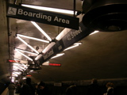本日は、Union Squareから南下し、グランド・ゼロからウォール街を通り、マンハッタンの南端まで行って自由の女神を拝みます。
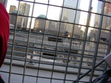
途中、Strand BookStoreという本屋に吸い込まれたので、今日はこれでおしまいです。どこにいてもやることはあまり変わりません。
朝7時頃にラガーディア空港(ニューヨークの主に国内線が到着する空港)に到着。ニューヨークはやはり寒いですが、この刺すような、シャキっとした冷たい空気は嫌いではありません。さっそく予約してあるホテルに電話をしてシャトルバスを呼びました。客は僕だけでした。
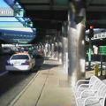朝早すぎるのでチェックインは無理かなぁと思っていたのですが、あっさり部屋に通されました。事前の調査によるとワイヤレスでインターネット接続可能とのことだったで、さっそく自慢のPowerBookG4を開いてコネクト！ゴー！
…繋がりません。
おっかしいなぁと思ってフロントに電話をすると、技術主任に話をしてくれるとのこと。しばらくすると技術主任から内線電話がかかってきました。「お前の隣の部屋でバリ3だ。入らないはずはないと思うんだけど。ちょっと行くから待ってな」
というわけで技術主任登場。「これはIEEEで規格が認められる前の古いワイヤレスカードだけど、とても品質がいいからこれを使って試してみな」とルーセント製のPCカードを渡されました。なんとなくこの人とは仲良くなれそうな気がします。
Macで認識するかどうか不安でしたが、ルーセント製のPCカード経由であっさりと接続成功。フロントに戻った技術主任のところへ喜び勇んで報告へ向かいました。ありがとう！。喜びすぎて、カードキーを部屋に置いて来てしまい、閉め出されてしまいましたが。うかれすぎ、とフロント係と技術主任につっこまれました。
長くなったので、観光は次回からです。
明日から年末まで冬休みを取ったので、ぶらりとニューヨークを観光してから日本に帰省することにしました。夜11時の便で東海岸に渡るので、現地到着は翌朝になります。日本への帰省途中に寄るにはあきらかに方角が間違っていますが、気にしません。
会社が終わった後、同期に晩御飯をおごってLAX空港まで送ってもらい、インディアナポリス経由便(直行便より安い)に乗り込みます。隣の席はよぼよぼの白人のおばあちゃんで、自分でシートベルトもうまく締められないようでした。ベルトの付け方を教えてあげながら「こんなおばあちゃんがこんな夜遅くの便で一人旅なんて大丈夫かなぁ」と思っていたのですが、離陸後、おばあちゃんはスニッカーズ→ポテトチップス→機内軽食のプレッツェル→コークと次々に平らげていて驚きました。
なんとなくこの国の底知れなさをまた一つ知った気分です。